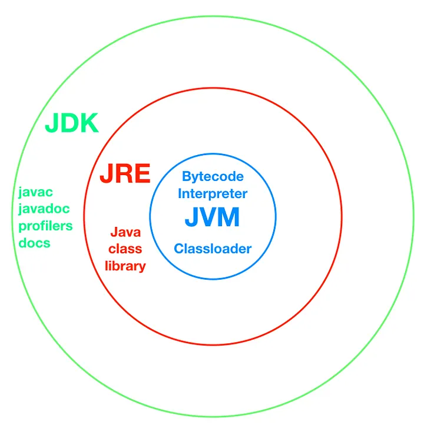
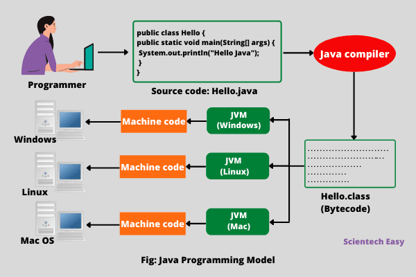

JVM, JRE & JDK
What is Java?
- Platform independent language
- Supports OOPS
- Portable (WORA - Write Once Run Anywhere)
3 main components :

JVM (Java Virtual Machine)
It's just an abstract machine that doesn't exist physically.

Note:
- JVM is platform dependent
- We need to install JVM based on the platform i.e. MacOS, Linux or windows. Input for JVM is bytecode & output is machine code. Now since bytecode can run by any JVM, it makes a Java program platform independent.
- JVM has JIT (Just In Time) compiler which takes bytecode & convert it into machine code.
JRE : Java Runtime Environment
- JRE Contains JVM & class libraries i.e. the libraries which we've used in the code.
- So if we have JRE, we can run any Java Program but we cannot code the program.
JDK : Java Development Kit
- It has programs language information
- It has compiler (javac)
- It has debugger
So JDK = JRE + (Program Language + compiler + debugger + other dev components)
Note: So JVM, JRE and JDK all three are platform dependent but the Compiled bytecode is platform independent.
JIT : Just-In-Time compiler
JIT (Just-In-Time) Compiler is a part of the JVM that converts bytecode into native machine code at runtime to improve performance.
⚙️ How JIT Works (Step-by-step)
1️⃣ You compile Java code javac MyClass.java
- Generates bytecode
2️⃣ JVM starts running the program
- Uses Interpreter initially
3️⃣ JVM monitors which methods run frequently
- These are called Hot Spots
4️⃣ JIT compiles hot methods into native machine code
5️⃣ Next time method runs
- Directly executes native code
- ⚡ Much faster
🧪 Example
for(int i = 0; i < 1_000_000; i++) {
sum += calculate();
}If calculate() is called many times:
- JVM marks it as “hot”
- JIT compiles it to machine code
- Future calls are super fast
What is ClassLoader in Java?
- ClassLoader is a JVM component responsible for loading .class files into memory at runtime.
- It loads classes only when needed (lazy loading) — not all at once.
- Java follows a parent delegation model
Bootstrap ClassLoader
↑
Extension ClassLoader
↑
Application ClassLoader- Bootstrap ClassLoader
- Loads core Java classes
- Examples:
- java.lang.*
- java.util.*
- Written in native code (C/C++)
- Highest priority
- Extension ClassLoader
- Loads classes from:
$JAVA_HOME/lib/ext
- Used for extension libraries
- Application ClassLoader (System ClassLoader)
- Loads your application classes
- Reads from:
classpath
### Parent Delegation Model
- Whenever a class is requested: It does NOT load directly
- Instead:
- Check if class is already loaded
- Delegate request to parent
- Parent tries to load
- If parent can't → child loads it
- Flow Example
Class.forName("java.lang.String");Steps:
- Application ClassLoader gets request
- Delegates to Extension
- Delegates to Bootstrap
- Bootstrap finds and loads String
Class Loading Phases (Deep Dive)
After ClassLoader loads a class, JVM performs:
- Loading
- Reads .class file
- Converts into binary
- Stores in memory
- Linking
- Verification
- Bytecode correctness check
- Prevents malicious code
- Preparation
- Allocates memory for static variables
- Default values assigned
- Resolution
- Replaces symbolic references with actual memory references
- Initialization
- Executes:
- Static blocks
- Static variable assignments
When is class initialized?
- Static variable access
- Static block execution
- Reflection (
Class.forName())